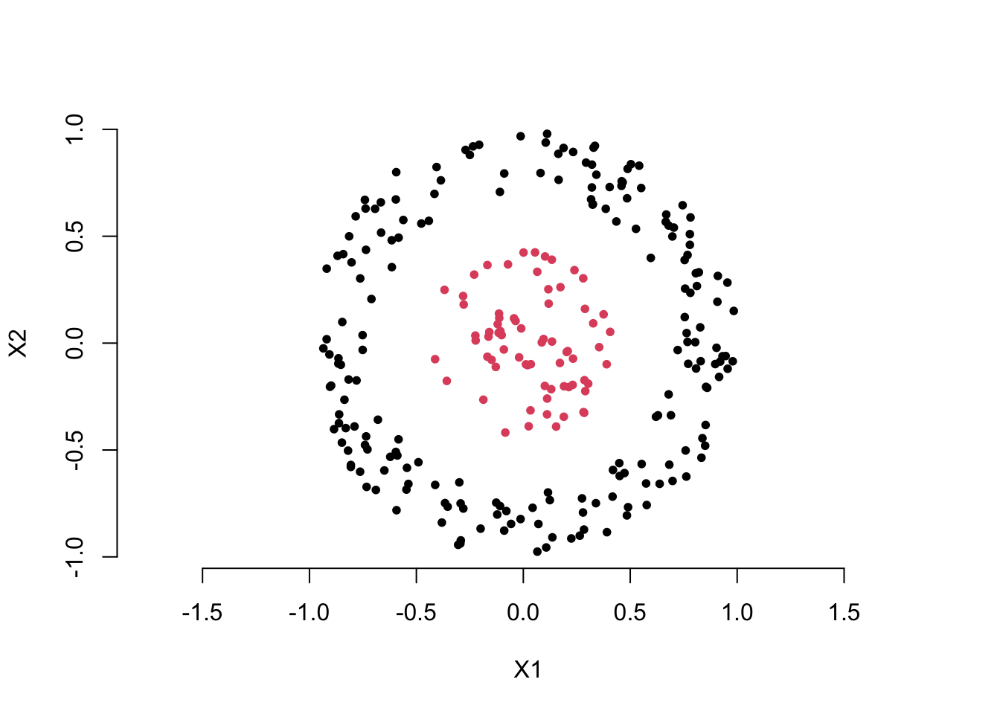
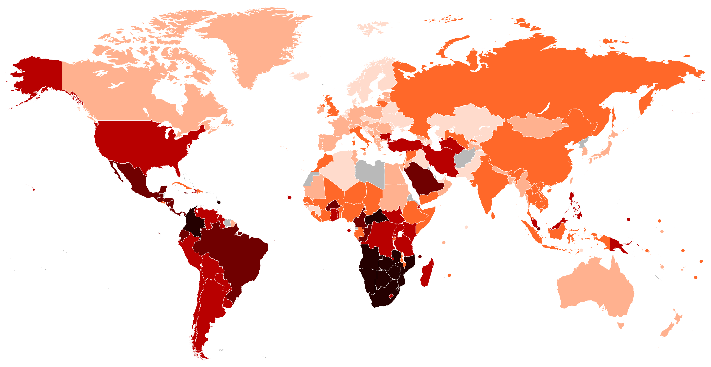
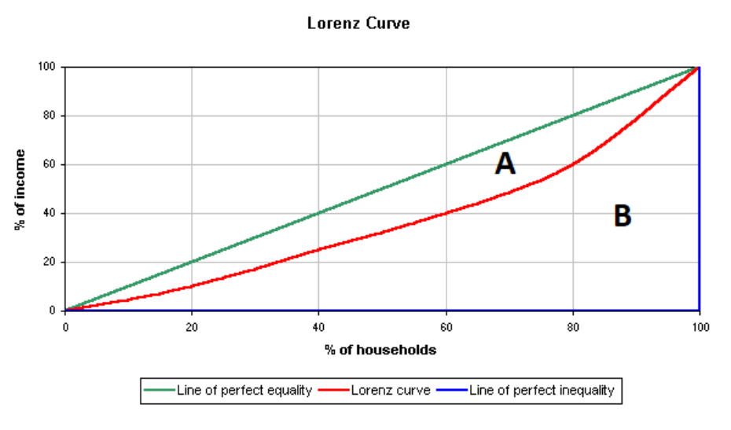

1. Introduction to feature extraction
So, how does feature extraction create new feature variables? Let’s start by looking at a few examples. The first example is one we’re all familiar with: BMI, or Body Mass Index. It is a measurement used to assess whether a person has a healthy body weight. It is calculated by dividing a person’s weight in kilograms by the square of their height in meters, \[ \text{BMI} = \frac{\text{weight (kg)}}{\text{height (m)}^2} \]
Clearly, BMI is a new variable created from the original variables. It not only reduces the number of variables (from two variables, height and weight, to one BMI variable) but also provides a more effective and convenient way to assess overall health. Thus, BMI is a classic example of feature extraction. From a mathematical perspective, BMI is a function of the original variables, height and weight, i.e. \(\text{BMI} = g(h,w)\).
By the way, in statistics, we usually refer to variables derived from original variables as latent variables. Latent variables are typically used to represent quantities that cannot be directly observed or measured. This is easy to understand: we can use a ruler and a scale to measure height and weight, but there is no direct instrument to measure BMI—it has to be calculated from height and weight. Therefore, in machine learning, we often refer to the space formed by extracted feature variables as the latent space.
A more complex example is the Gini coefficient. The Gini coefficient measures inequality in income or wealth distribution. It ranges from 0 (perfect equality) to 1 (perfect inequality) and is based on the Lorenz curve, comparing actual distribution to perfect equality. For example, the map below shows the Gini coefficients of various countries, allowing us to understand their levels of equity.

So, how is the Gini coefficient calculated? The Gini coefficient is calculated using the Lorenz curve, which plots the cumulative share of income or wealth against the cumulative share of the population. The formula is: \[ G = \frac{A}{A + B} \] where \(A\) is the area between the Lorenz curve and the line of perfect equality, and \(A + B\) is the total area below the line of perfect equality.

It can also be computed directly using income data as: \[ G = 1 - \sum_{i=1}^{n} (y_i + y_{i-1})(x_i - x_{i-1}) \] where \(x\) and \(y\) are cumulative population and income shares. People can collect household income data from different countries, but the Gini coefficient must be computed based on these raw data.
Now, let’s look at an example more relevant to machine learning. Take a look at the scatter plot below. Clearly, we want to use the two feature variables, \(X_1\) and \(X_2\), to distinguish the red points from the black points. You can think about how to create a new variable using the two feature variables to solve this classification problem.
You may already have the answer. Yes, we can calculate the distance of each point from the origin to create a new feature variable, i.e. for each point \(i\),
\[ D_i = \sqrt{ X_1^2 + X_2^2 } \]
Then, we can choose an appropriate cutoff to differentiate the black points from the red points. This is also an example of feature extraction, where the extracted feature is a function of the original feature variables, i.e. \(D = g(X_1, X_2)\).
By now, I guess you’ve probably realized something. Do you remember how we introduced linear classifiers in the first part of the course? (Read about linear classifiers here)
Yes, first, we compute the weighted sum of the feature variables, then compare it with an appropriate cutoff. In fact, a linear classifier is essentially doing feature extraction first, and then comparing the extracted feature with a cutoff. This feature extraction is also a function of the original feature variables, that is:
\[ Z = g(X_1, X_2, \dots, X_p) = \sum_{j = 1}^p w_jX_j \]
Now, we can summarize the discussion. Feature extraction is about finding an appropriate function \(g()\) of the original feature variables to transform and create new feature variables.
The examples above share a common characteristic: they all design feature extraction methods based on the problem’s specific characteristics, using domain knowledge (prior knowledge) or specific rational analysis. This approach is often referred to as domain knowledge based feature extraction or manual feature extraction. The benefits of this method are obvious, but it has a significant drawback: it heavily depends on prior information. Next, we will introduce the star of this lesson, PCA, which is an algorithm that learns the feature extraction function from the data, i.e. data driven solution.
Quiz:
Use simple language to explain to your family what feature extraction is.
We introduced the concept of ‘feature mapping’ idea for creating a nonlinear model in the first part of this course. Is feature extraction also a kind of feature mapping?